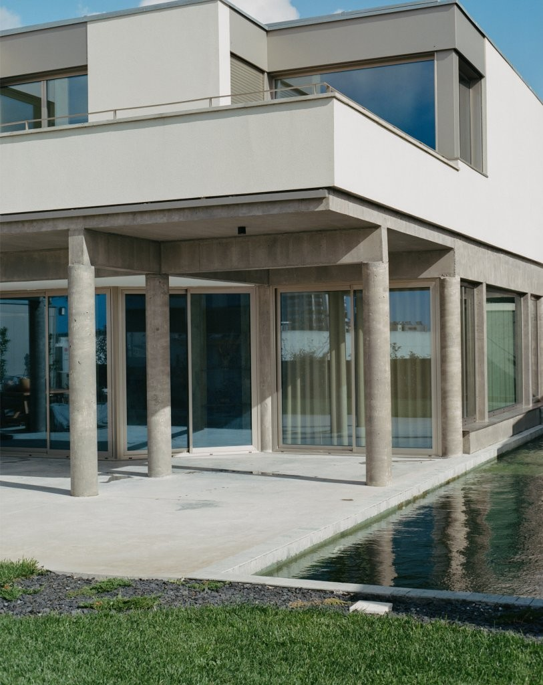
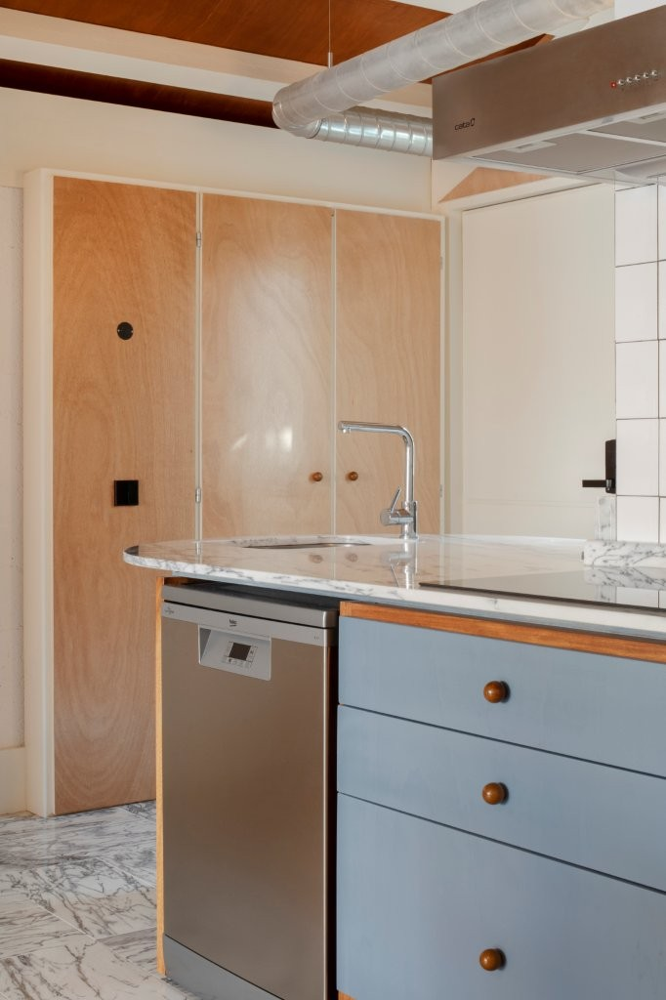
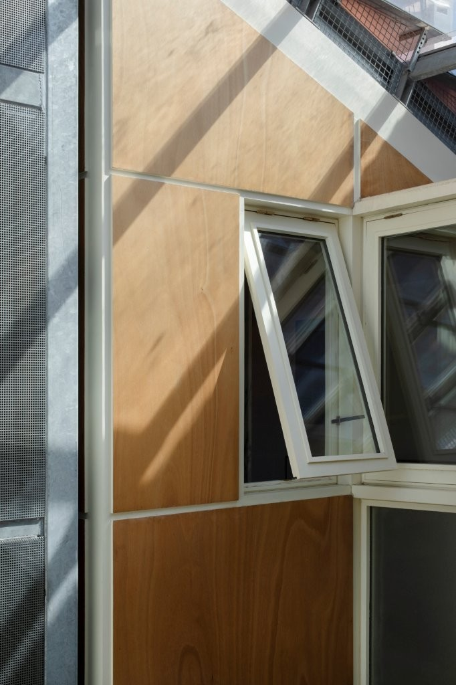

Começámos a Casa Crespo com uma descrição detalhada e rica da visão do cliente: o espaço social, especificamente a "sala de estar", deveria ser suficientemente espaçosa para acomodar uma grande mesa de jantar, um sofá bem comprido à frente de uma ampla TV, uma mesa de bilhar e até uma mesa de DJ para os dias de festa. Deveria também ser aberto para a cozinha e usufruir de um duplo pé-direito, tal como o cliente tinha visto numa novela brasileira semanas antes (muito semelhante ao Palais Stoclet de Hoffman, embora prefiramos o seu rival Loos na Villa Müller, por exemplo). O Egyptian Hall for Parties *, descrito por Palladio, foi uma recomendação que levamos a sério na composição deste composto de espaços: Colunas para suporte do pavimento do varandim,sobre o qual uma parede contínua com meias colunas enquadra a vista para baixo e deixa uma luz difusa irradiar (neste caso obtida através da reflexão da luz dos lanternins colocados de forma invertida)
Uma espécie de "anti domesticidade", como afirma Pier Vittorio Aureli*, atravessou toda a pesquisa por uma verdade arquitectónica que correspondesse a essa "ficção". Talvez seja um exagero, mas a natureza desta habitação podia ser encontrada nas boarding houses americanas, onde a socialização da vida na área comum ocorria num plano bastante aberto, essencialmente dividido por elementos estruturais do edifício, constituindo uma espécie de domicílio hipostilo que se prolonga para o exterior, com quase todas as funções imagináveis. Posto isto, as áreas privadas e estritamente funcionais devem ser relegadas para uma esfera paralela que separe claramente a vida social da vida privada/íntima e do trabalho reprodutivo. Todos com necessidades cenográficas específicas, os quartos dos pisos superiores eram todos suítes (como num hotel real), permitindo uma performance cenográfica autónoma: o quarto cor-de-rosa para a menina, a grande janela com vista para o quarto principal, o carácter asséptico e lavável da cozinha/lavandaria, etc.
* Andrea Palladio, Os Quatro Livros de Arquitectura, 1570, MIT Press, pp. 41
# 162.01
Casa Crespo
2018 - 2023
Póvoa de Varzim
fotografias de Francisco Ascensão


Na antiga fábrica de biscoitos Imperial, instalada numa casa burguesa da segunda metade do século XIX, havia de tudo: lajes de betão, treliças metálicas, janelas de alumínio, telha de fibrocimento, azulejos industriais e, claro, resquícios da construção original — a estrutura de piso em madeira de castanho, a fachada com cantarias de pedra e azulejos de inícios do século XX, janelas de madeira, tabiques, etc.
A fábrica ocupava a totalidade do lote. Não demolir tudo — opção que tomámos desde cedo — implicava admitir que essa heterogeneidade teria de ser continuada (e até aprofundada) na nova intervenção, destinada a acolher uma habitação colectiva com cinco fogos e um escritório.
A construção seria garantida por pequenas oficinas, senão mesmo por autoconstrução, e nesse processo aprendemos a relativizar o autor. Ou melhor: a diluí-lo na obra, que é também projeto. Serralheiro, carpinteiro, pedreiro, eletricista — todos autores in situ.
Para marcar a obra e demonstrar a todos eles o seu funcionamento, foi necessário montar três tabuleiros horizontais (foi permitido acrescentar um piso), como plantas impressas à escala real. Reutilizámos a estrutura do prédio original até ao tardoz, abrindo um grande saguão ventilado ao centro, que viria a organizar todo o núcleo de acessos e cozinhas, com um elevador metálico que também serve de estrutura aos pisos de madeira.
No antigo logradouro, as paredes meeiras não tinham a mesma qualidade, pelo que optámos por uma estrutura de betão com lajes colaborantes, seguindo uma métrica que permitia coser os principais elementos, incluindo a escada existente. A partir daí, o jogo passou a ser o de adicionar escadas, varandas, elevador, nichos, todos arrumados segundo uma métrica principal de 1,2 m, que dividia o prédio em quatro partes iguais na sua largura. Tudo para que a casa burguesa e a fábrica pudessem dar lugar à habitação colectiva com o mínimo de esforço supérfluo.
Nenhuma planta é exactamente igual, visando criar diversidade espacial nos espaços “exteriores” aos fogos, mas todas são plenas de elementos reconhecíveis. Os apartamentos com frente de rua expandem-se no eixo vertical, com escada própria entre dois pisos. Os apartamentos com frente de logradouro expandem-se no eixo horizontal e formam um todo volumétrico que se desmonta em pátios, terraços e varandas — todos comunicantes.
Ao contrário dos apartamentos, que são “boxes” estanques, e que conduzem o espaço entre eles sempre na vertical, rematando numa grande claraboia, o escritório funciona no piso térreo como extensão do átrio, com remate visual num grande rochedo, iluminado difusamente.
# 000.02
Prédio em Entreparedes
2017 - 2023
Porto
fotografias de Tiago Casanova
Inicialmente a casa foi projectada para ninguém e, por isso, para “todos”: um promotor imobiliário encomendou o projecto num loteamento à margem da cidade de Vila do Conde e deveria vendê-la, casa ou projecto, a um comprador final. Uma certa universalidade era o critério base do pedido: espaços sociais ligados à cozinha, um bloco de 4 quartos, sendo um deles transformável em escritório, espaços de serviço (garagem, casas de máquinas, arrecadações) segregados e materiais/cores/texturas de grande elementaridade.
Nesse intento, juntaram-se dois “projectos” com os modos de hoje e daqui: a planta da Casa Sul Mare di Sicilia de Lina Bo Bardi e Carlo Pagani, nada estranha tipologicamente à Domus Romana, e o dominó corbusiano, extremado no corte que eleva o piano nobile da Casa, “aumentando” o terreno de um lote suburbano não muito extenso. Os modos: ao dominó de betão justapusemos, no piso superior, uma fachada de ETICS com um entablamento, sob o qual fenestrámos o volume nos seus 4 lados. A excepção reservou-se para a entrada que corta esse entablamento. As caixilharias de alumínio são expostas à cor natural, assim como o contraplacado de madeira e o mármore no interior.
# 172.01
Casa no Lote 7
2015 - 2021
Póvoa de Varzim
fotografias de Tiago Casanova
paisagismo de Lúcia Salvador
Os espaços existentes oscilavam entre uma tipologia de comércio e de armazém, herdando a grande montra da primeira e as condições construtivas mais precárias da segunda. Para o cumprimento integral do programa de escritório-sede do Grupo Vendeiro, com grandes open-space de trabalho, salas de reuniões mais ou menos formais, arquivos, copa e diversos serviços, o projecto passou rapidamente de um traçado de compartimentação rigidamente instruído por um sistema universal de medidas e pelo pensamento integrado dos elementos menos “palpáveis” do espaço físico: som, luz, temperatura, ventilação, para uma infindável tarefa de arrumação de sistemas e redes, desde o piso técnico à tomada no mobiliário. Para que a arquitectura sobrevivesse, o projecto submergiu num período de menos arquitectura, convencionalmente falando, e só voltou a emergir com a definição qualitativa dos espaços: que paredes deveriam ser opacas ou em vidro, quantas clarabóias deveriam ser abertas e onde, etc. Essa aproximação ao real conduziu, finalmente, a uma palete de cores e materiais que se poderia repetir em todo o projecto de forma seriada. O que até agora era aparentemente cinzento e meramente técnico, tornou-se como que uma flecha inflamada de Eros a Apolo: as alcatifas azuis no chão misturaram-se então com as madeiras douradas nas paredes e alternaram-se diferentes texturas de branco para os tectos e móveis fixos.
# 157.13
Sede do Grupo Vendeiro
2015 - 2021
Póvoa de Varzim
fotografias de Tiago Casanova
The plot, very long but nevertheless wide, faced the street in the low level and a big field in the high level. This difference of heights creates a big difference of quadrats, almost creating two separate worlds in the same plot. The existing house in schist holds a romanic church capitel in its facade and arose an initial debate of how to preserve it with the local authorities, due the state of total ruin and the intentions to extend the house to more than its double .
From the two pre-existing schist stone volumes, we occupied the one facing the street with rooms, whilst the other we “disoccupied” with an exterior patio. The proposal aims to belt and consolidate the pre-existences by building inside and around a new concrete “coffer”, enough elastic to transport one living the well consolidated street to a maximum isolation of the fields in the north sector. This “preservation” strategy could have some roots, with the required distances, in the superefficient and lasting example of the Cordoba Mosque and Cathedral.
The concrete walls and slabs are designed both to adapt to the implantation of the pre-existing houses and to a new organizing main axis that defines the entrance space and the more technical area for storage/ car’s porch . Between these two main imposed and auto imposed circumstances, the design intended to create a system of four more demure patios, more or less opened to the outside landscapes. Two of them belong to the street quadrant and the other two belong to the fields.
The absence of a reference about the client request can be surprising, as it’s usual to be a central item for us. Here there was no exception with the significant detail of an almost absolute unanimity throughout the process. Jocosely, the main discussion and negotiation took place at the end on a big topic: the ceramics combinations.
# 104.01
Casa em Rates
2015 - 2021
Póvoa de Varzim
fotografias de Tiago Casanova
Arquitetura: ATELIERDACOSTA + Pedro Bragança
A casa existente, num gaveto do Bairro da Vilarinha, tinha já uma ampliação pré-existente a
poente, quadrante para o qual poderia voltar a ampliar-se, respondendo dessa forma à
encomenda.
O bairro, um dos últimos do Estado Novo no Porto apostando na habitação unifamiliar com
pequeno quintal para uma classe formada maioritariamente de funcionários do Estado
(1958), repete consistentemente a tipologia como modelo numa considerável área de nova
urbanização. Em toda a urbanização, há uma clara procura em reproduzir tardiamente
alguns modelos modernos de habitação de iniciativa pública, saídos, originalmente, das
experiências alemãs e russas do início de século.
Procurámos que a ampliação pedida, cujo programa indicava sensivelmente a mesma área
da já construída, mantivesse dois dos seus fundamentos - uma certa elementaridade e a
modularidade construtiva - mas alterasse por completo a natureza dos espaços propostos,
nas suas dimensões de linguagem, materiais e relação com os diferentes quadrantes
solares e envolvente urbana. Destes pontos, a demarcação da linguagem era, aliás, uma
prerrogativa imposta pela própria Câmara Municipal do Porto, que estabeleceu normas
específicas para as intervenções em bairros do Estado Novo como este, com o intuito de
proteger a integridade da arquitectura original, cujo verdadeiro interesse urbanístico só se
constitui na leitura do todo.
Assim, ao volume de reboco e pedra, tendencialmente encerrado e monolítico da casa
original, justapõe-se um volume tendencialmente aberto e estrutural, no qual qualquer
paramento que não vidro é igualmente reflector e miscível com o seu entorno. A geometria
de implantação da estrutura é essencialmente resolvida em três pórticos metálicos
equidistantes, suporte das novas lajes e reforço das antigas, cujo limite coincide com o
pórtico do meio. A racionalidade económica fundamentou a manutenção das estruturas do
corpo original, apenas com o reforço metálico necessário, e prolongou a sua influência no
projecto através de uma certa austeridade com que o desenho dos espaços interiores foi
abordado No entanto, essa continuidade natural com o espírito do projecto original encontra
dissonâncias outras na caracterização do espaço interior, através de uma delimitação clara
do sector que usufrui da maior fenestração da nova intervenção, sobretudo por critérios de
escala, intensidade e tipo de uso que nos foram sendo relatados. Assim, um escritório no
piso -1, que se abre para um novo pátio à cota inferior, uma cozinha e sala de jantar no piso
0, que se prolonga para um terraço para refeições exteriores, e o maior dos três quartos no
piso 1 que se projecta para sul através de uma janela de peitoril , são espaços que se
localizam no novo corpo, enquanto uma pequena sala de estar, uma casa de banho e dois
quartos menores se localizam na pré-existência. A imposta elementaridade do projecto só
foi quebrada depois de descoberto um erro de obra que, no grosso, prontamente se corrigiu,
mas de que se deixou pequeno registo, vencidos pela óbvia e jocosa realidade de que um
elemento de perturbação seria afinal bem-vindo.
# 140.01
Casa na Vilarinha
2017 - 2020
Porto
fotografias de Tiago Casanova
A casa rural original, irreconhecível após uma intervenção dos anos 80, e outras dependências, como piscina coberta e alfaias agrícolas, delimitam o terreno a Nascente em relação ao alargamento público e rua, libertando todo o terreno a Poente. O terreno é dividido por uma grande linha de frondosos cedros que demarca uma área de produção agrícola a poente de um jardim de domínio mais residencial. O projecto, centrado na transformação em casa de alojamento com 5 unidades autônomas, ligadas por generosos espaços de usufruto comum, representava para o proprietário a oportunidade de criar novos espaços interiores com uma relação directa ao jardim, já que a casa original apenas usufrui da relação com a rua e com um pátio rebaixado. Assim, a intervenção proposta divide-se fundamentalmente em três partes: a casa original, parcialmente demolida e recompartimentada, revestida com sistema ETICS, a nova ampliação, volume quadrado 12x12 m em betão à vista elevado do terreno, e, finalmente, a galeria de ligação entre os dois edifícios, em estrutura de madeira e vidro. Esta galeria, que alberga a nova entrada da casa de alojamento e os principais acessos verticais, é deliberadamente colocada no eixo da área de estacionamento já existente e com acesso automóvel directo, justamente entre a casa original e o novo corpo ampliado. Resumem-se ao mínimo os materiais nas três partes da intervenção; entre reboco pintado, betão a vista e madeira esmaltada, cumprindo o pedido inicial do proprietário de que nunca houvesse uma ruptura no conjunto, ficando apenas subtilmente perceptível e esclarecida a diferença construtiva e material de cada um dos corpos.
# 100.07
Casa de Alojamento Rural
2012 - 2019
Gião
fotografias de Tiago Casanova
# 114.01
Casa RR
2015 - 2019
Lavra
fotografias de Tiago Casanova
PT
Numa estação de serviço pretende-se reorganizar uma área com precárias coberturas para aspiração de automóveis e outros serviços, centralizando-os num único coberto em ilha dupla, com 10 boxes. Propõe-se um coberto com estrutura em “V”, descarregando num único pórtico central que reúne também as infra-estruturas e áreas de pagamento. Neste pórtico central da estrutura, dada a grande profundidade da peça, inclui-se uma clarabóia linear rasgando os planos de tecto inclinado em alumínio.
A peça surge oblíqua e desagrupada no meio de um vazio formado por planos de fachadas de edifícios de apoio em chapa e um muro de vedação.
EN
At a service station, there was a need to reorganize an area with precarious awnings for car vacuum cleaning and other services, centralizing them under a single porch in a double island with 10 slots. A V-shaped structure is proposed, supported by a single central portico that also houses the infrastructure and self service units. In this central structural portico, given the great depth of the piece, a linear skylight is included, cutting through the inclined aluminum ceiling planes.
The piece appears oblique and detached in the middle of a void formed by the façade planes of support buildings in metal sheeting and a boundary wall.
# 157.14
Coberto de Aspiração
2019
Póvoa de Varzim
fotografias de Tiago Casanova
O pedido de renovação de um apartamento, com pinturas, envernizamentos e reparações, torna-se motivo para uma intervenção mais profunda no núcleo de serviços, nomeadamente na casa de banho (totalmente nova), quarto e corredor. As louças existentes são substituídas e reorganizadas a partir da introdução de dois novos elementos : uma grelha de ladrilhos de marmorite no piso e um caixilho/móvel de madeira que rompeu com a parede fronteira existente da casa de banho. Rodado face à compartimentação, ficou voltado para a maior área de janela do apartamento e coseu dois alinhamentos das paredes do corredor. Face à ruptura em relação ao existente que estes revestimentos representavam, procuramos no vermelho intenso da madeira de Takula a continuidade com a tijoleira de barro pre-existente. O desenho das carpintarias foi ambicioso nos perfis de caixilharia e soluções de remate, porque cedo percebemos que estávamos perante um carpinteiro que ainda podia fazer construção naval. Desenhar é um acto vão se não se souber como construir. E aprender a construir para aprender a desenhar é, por isso, a única via. Sem este carpinteiro seríamos meros programadores do espaço, assim somos apenas intérpretes do seu saber.
# 121.02
Renovação de Apartamento
2020
Póvoa de Varzim
fotografias de Tiago Casanova
Miradouro
Uma grossa massa de herbáceas orlava o perímetro de um terreno em planalto numa encosta sobranceira ao vale do Lima. Na “proa” do terreno, o som da água de nascente a correr espreitava desde o tanque do vizinho abaixo. Para conquistar a vista e o som na proa, subtrai-se à densa massa de herbáceas o espaço de 3 x 3 m. Aí se implanta um miradouro quadrado, aberto em dois lados para o tanque e para o vale, e fechado nos outros dois através de dois muros de betão, onde se apoia a ramada em estrutura de ferro, e que fazem reverberar o som da água, logo mais audível quando se passa pela abertura de canto deixada entre eles. Conquistada a vista e o som, só falta tudo voltar ao normal e deixar a estrutura que os conquistou ser reconquistada pelas intermináveis heras. Camuflam-na de novo na grande massa de herbáceas, fazendo com que o projecto se reduza ao humilde espacinho conquistado debaixo do seu tecto, precário e dependente da permanente reconquista, a cargo da jardinagem.
Belvedere
A thick mass of plants bordered the perimeter of a plateau terrain on a hillside overlooking the Lima valley. At the 'prow' of the land, the sound of spring water running peeked from the neighbor's tank below. To conquer the view and sound at the prow, a 3 x 3 m space is subtracted from the dense mass of herbaceous plants. There, a square belvedere is implemented, open on two sides towards the tank and the valley, and closed on the other two sides by concrete walls, which support the iron-structured pergola and make the water sound reverberate, becoming more audible when passing through the corner opening left between them. With the view and sound conquered, all that remains is for everything to return to normal and let the structure be reclaimed by the endless ivy. They camouflage it again in the large mass of plants, making the project reduce itself to the humble little space conquered under its ceiling, precarious and dependent on permanent reconquest, in charge of gardening.
# 000.01
Miradouro
2016 - 2018
Ponte de Lima
fotografias de Tiago Casanova
# 145.01
Ginásio R Space
2018
Porto
fotografias de Tiago Casanova
# 118.02
Clínica Oftalmológica Dr. Sousa Neves
2018 - 2019
Póvoa de Varzim
fotografias de Tiago Casanova
Deito coisas vivas e mortas no espírito da obra.
Minha vida extasia-se como uma câmara de tochas.
- Era uma casa - como direi? - absoluta.
Eu jogo, eu juro.
Era uma casinfância.
Sei como era uma casa louca.
Eu metias as mãos na água: adormecia,
relembrava.
Os espelhos rachavam-se contra a nossa mocidade.
Apalpo agora o girar das brutais,
líricas rodas da vida.
Há no esquecimento, ou na lembrança
total das coisas,
uma rosa como uma alta cabeça,
um peixe como um movimento
rápido e severo.
Uma rosapeixe dentro da minha ideia
desvairada.
Há copos, garfos inebriados dentro de mim.
- Porque o amor das coisas no seu
tempo futuro
é terrivelmente profundo, é suave,
devastador.
(...)
Herberto Helder
“Súmula”, In «Ou o Poema Contínuo», Assírio & Alvim, 2001
# 118.01
Casa de Férias
2016 - 2019
Esposende
fotografias de Tiago Casanova
When we first visited the corner space and heard the program description from the client, a clear motto came: the program could easily be settled by designing only a kind of a solo device, a cabinet, an apparatus of wood or/and metal, placed inside that space. The functions asked in the program could be arranged in two big groups in terms of scale: one of those consuming preferably open-spaces or subspaces inside it, but all above 10 squaremeteres (barberspace, boutique area), and another of those like the fitting rooms, exhibitors, small warehouse, counter, most of them transformable into niches spaces. That lead us to keep the existing masonry as found (the bathroom was kept) and adjust the device that would host the less scale objects, even if obbeying to a very recongizable structural grid, helping the wood and metal construction to take place. This piece, to be placed in the core of the store plot, backing up to the rear walls, released the facade perimetrer and moulded the empty space in-between it and this perimeter. Therefore, the apparatus should be designed as if it landed in a continuous floor and ceiling. The piece can be divided into 3 parts, from the heaviest to the lightest: the structure in wood, creating the support to the piece and regular limits, the semi-open mesh to the warehouse and mechanical room in metal with outter limits and the HVAC piping in inox, expelling out of its borders even more. The piece is the machine that makes the productiveness of the empty space it defines around and where consumption takes place.
Establishing the relation with the public space around, a street and a square, the heavy outter shell of stone and windows remains with no classic showcase, but only transparent as much as possible, and deliberately punctuated with new reddish awnings and big industrial white lighting lamps.. The second layer, defined by the device designed, offset from the heaviest, is perceived from the outside as an interior inside an interior, a collection of cosy niches for showcasing, and the lighting is rather warm and gold/ yellowish. Between the two shells people live (in) the “thershold” space, between white and goldish; stone and wood; in and out; public and private.
# 109.10
Barber Shop e Boutique
2017 - 2018
Viana do Castelo
fotografias de Tiago Casanova
# 046.02
Clínica de Obstetrícia
2016 - 2017
Vila Nova de Famalicão
fotografias de Tiago Casanova
O pedido, pouco comum, tinha a ver com a expectativa não verificada de um
casal vir a ter filhos. Daí resultou a compra de um “T2” que nunca funcionou
como tal, a não ser na excepcionalidade das visitas, nomeadamente dos sobrinhos.
Ao ponto de terem ocupado, a certa altura, o segundo quarto com armários próprios de guarda-roupa. Todos estes indícios, somados ao desenho existente - bastante típico de um financiado por construtor dos anos 90 - sem cuidados na qualidade da compartimentação e do seu resultado espacial, levou-nos à revisão quase total dos espaços, na relação com a aplicação real dos hábitos, discutida de raiz. A habitação não poderia deixar de ser compartimentada mas poderia adquirir diferentes categorias de divisão, em que cada umbral correspondesse a um grau de aprofundamento da intimidade e, por isso, de relação entre os espaços que mediava. Primeiro, ficou o registo de um corte excessivo da relação entre o cônjuge que usava a sala e o outro que usava o escritório quando se encontravam em casa, já de noite, pela presença da cozinha, colocada entre estes
dois espaços. Depois, registou-se que a cozinha, normalmente é usada em simultâneo pelos dois e não sofreria, por exemplo, deste problema. Também a falta de eixos visuais entre os espaços, cuja relação era intermediada apenas por um hall, se tornava, neste contexto, problemática.
A proposta passa por refazer todo o miolo mais escuro de articulação dos
espaços com frente de fachada, com as casas de banho e o desenho de espaços- umbral - onde o grande desejo de ter muita arrumação é respondido com armários fixos. Assim, o quarto passa a ser praticamente metade do fogo, com entrada através de uma grande porta, e, no interior, encontram-se vários espaços que não perdem, nem a relação visual - antes inexistente - com o espaço da sala, nem a possibilidade de divisão através de um elemento mais informal - a cortina. Já a sala passa a relacionar-se directamente com um escritório que é umbral na relação desta com a cozinha - que ocupa agora o antigo espaço de escritório, no extremo sudoeste da planta. Ao demolir paredes, a tentação de não voltar a compartimentar era grande - resistimos, para que a vida não seja passada num “contentor” amorfo e indefinido, e transferida, sem sequer ter tentado resistir, para os espaços dos 3 computadores que duas pessoas usam.
Hoje, relatam- nos transformações na forma de usar aqueles espaços. Pensamos que, se algum sucesso houver neste exercício se deve a termos resistido a essa tentação. A vida, mesmo que transferida em parte para os espaços não reconhecidos pelo desenho da arquitectura (no apartamento existem 3 computadores) ,ainda exige que os espaços sejam desenhados em resposta às manifestações do Homem, das mais rotineiras às possivelmente artísticas - acordou- -se, por exemplo, a divisão do escritório da sala com uma cortina vermelha de teatro, para ensaios de contrabaixo.
# 121.01
Apartamento
2015 - 2016
Braga
fotografias de Tiago Casanova
Quando visitamos pela primeira vez o prédio, já não havia prédio - apenas a fachada frontal com 3 pisos, que seria obrigatório manter. Era possível ter mais um piso e um sótão no desvão da cobertura. Pretendia-se instalar 3 fogos e um comércio no Rés do Chão. Apesar de extremamente estreito, o lote tinha duas entradas o que permitiu repensar o sistema de acessos, feito exclusivamente pelo exterior, como um “deambulatório” de escadas em redor do pátio comum do logradouro. O elevador em betão havia de estruturar o novo tardoz, sendo ele o único volume que se projecta além do alinhamento dominante de fachadas da Viela dos Poços, com recurso a uma planta pentagonal suavizada com curvas em dois dos seus lados - interior e exterior - que exigiam um remate mais delicado. Dada a fragmentação de plataformas a diferentes cotas e a sua articulação com as escadas implantadas no logradouro, não se pretendia construir uma fachada de tardoz formal. Por isso, a projecção do elevador é cosida apenas com painéis de ferro e vidro que formam um átrio/ marquise, espaço de transição para o interior de cada fogo. O prolongamento desse tipo de construção metálica às escadas exteriores, simplesmente apoiadas na antiga parede meeira, reforçam essa desmontagem absoluta de um plano marcado ou referência volumétrica do edifício original.
A pesquisa do projecto concentrou-se ainda noutro aspecto difícil: a maneira de fazer emergir um novo piso e a sua cobertura, num quarteirão bastante compacto e sem novas ampliações recentes, com uma grande unidade métrica e volumétrica, dada pela repetição de cantarias e janelas. Fizemos flutuar uma nova frente em madeira esmaltada, desligada da fachada antiga pela presença de uma varanda metálica que encima a cornija de pedra. Os interiores, livres de qualquer acesso vertical, queriam-se com a maior elementaridade possível, em que a única determinação espacial é a posição das infraestruturas - casa de banho e cozinha - ao centro, gerando dois espaços praticamente equivalentes.
# 100.01
Edifício multifamiliar e comércio Noshi
2016 - 2018
Porto
fotografias de "a caixa negra"
The half-underground space was plenty of compartimentation and lightless environment inside its very thick stone walls. The owner intended to transform it into a second home inside his old house, being almost self-sufficient and liveable. The construction surveys revealed there was running water below the pavement, leading us to make the “U” shaped plot a kind of big concrete floating boat first, well impermeabilized to receive the architectonic devices above, enough warm and refined to “build” the home, including materials as wood of different types. Apart from all space and light strategies (as opening windows and patios) to create a 4-subdivided living/resting room, the bar, a bathroom, a kitchen and a dining room, there was a nitid problem of unity. The hard and late resolution of one of the main topics -artificial lighting- turned to be the motto to address the problem, by designing a big linear lamp made of wood sheet in a cross-shape allowing to unite all the spaces, more than the original plan let. Wherever one is, it is possible to see the suspended linear lamp.
# 078.06
Semi-cave
2015 - 2016
Esposende
fotografias de Tiago Casanova
The portuguese National roads, most of them forming an old settlement, define a kind of places-in-line along the territory in the northern region. Most of the people living 15 km away from the service station intervened, know it and frequently use it, not only as a gas pump, but also as a bar, minimarket, local ATM, jetwash, propane gas provider, etc. Most of these functions were already provided in the existing building in a very precarious way.
Located in the 206 National road, the existing building presented an almost regular structure, even though it was full of anacronic aspects to correct and mould to the new program. The structure was undressed of its excesses in the front facade, and totally treated (the concrete was old and fragile), cladded and displayed concerning its metric. The side and back facades were fully cladded with ondulated metal sheet. A concrete basement makes the building meeting the unleveled ground, regularizing the metalworks to do above. Apart from this very prosaic, understandable and rational intervention to refurbish the building, it was proposed in the front (south) facade a very long and low semi-open metallic piece, road inclined, that gives the building elevation a new proportion, holds the lighting advertisement and gives some shadow to the inner spaces.
Celebrate, understand and dignify this type of urban habitat is what architecture might be able to do when summoned to this very light kind of intervention. Furthermore, it has been shown more and more that this urban condition is much rooted to an old raison d´être for the organization of these linked settlements. We can´t still be so sure as Reyner Banham in Los Angeles, when depreciating the weak city centre at the expense of the periphery places as the urban engine and interesting object of study, but we can tell by driving around - the unique way to move in Famalicão - that the problematics here are much multiple and fizzier.
# 157.02
Estação de Serviço
2014 - 2015
Famalicão
fotografias de Tiago Casanova
Um banco para ser transformado numa clínica dentária; o programa dado sugeria a necessidade de compartimentalizar o espaço, lidando apenas com a existência da estrutura e das paredes perimetrais. Todo o Homem é diferente mas biologicamente semelhante. A partir da visão do cliente, cada Homem deverá ter um tratamento único e personalizado nesta clínica, mas, para isso, cada gabinete médico deverá ter condições semelhantes. A regra é baliza para o enquadramento da irrepetibilidade. A mesma clínica e os mesmos clínicos devem ser capazes de criar várias e únicas consultas todos os dias. Por isso, o principal requisito prendeu-se com a existência de luz natural em cada um dos 5 gabinetes médicos, embora não fosse possível que todos estivessem contíguos à fachada exterior, tendo em conta a sua largura. Para além disto, os médicos falaram-nos sobre o fenómeno da claustrofobia aquando do tratamento. Relembrando Anthony Vidler nos seus textos sobre a importância dos diagnósticos de claustrofobia e "agoraphobia" no advento do movimento moderno, uma pergunta se levanta: estarão as suas premissas falidas? De acordo com o cliente, juntamente com a necessidade clara de subdivisão do espaço, a de continuidade visual e de profusão de luz eram prioritárias. Para desenhar a massa construída, foram usadas três tipos de superfícies verticais: paredes opacas ( alcatifa, gesso cartonado e alumínio), paredes de vidro e cortinas. A maior parte da massa construída é formada por um conjunto desenhado com paredes de vidro, dividindo e ligando, moldando o tempo, multiplicando o espaço e as suas realidades. O uso do vidro - "este isolante, este milagre do fluído cristalizado", "este incolor, inodoro, não degradável" ( Baudrillard, 1969), “moral e higiénico” (Teyssot, 2010) material, - tornou-se numa condicionante de projecto por razões muito prosaicas - e, para se manter prosaico, as suas extremidades são redondas, facilitando o trânsito suave de carrinhos médicos, cadeiras de rodas, entre outros em movimento numa clínica.
# 053.01
Clínica Dentária
2015 - 2016
Vila Nova de Gaia
fotografias de Tiago Casanova
Do edifício do século XVIII – cunhal entre a Rua da Fábrica e a Rua Conde de Vizela - apenas os dois primeiros pisos se destinavam ao “Ostras & Coisas”. O terceiro e quarto pisos (este último recuado) estavam habitados, mas em mau estado de conservação da sua construção. O fragmento sobre o qual interviríamos estava ali, como a coluna de Filarete vista por Rossi, na sua redução a espaço e a luz de uma ruína , “devorada pela vida” em redor . No rés do chão ficou o abandono de uma churrasqueira construída nos anos 80, enquanto no piso 1 terá ficado a ausência de um alfaiate. A este fragmento, que é também em si fragmentado, impunha-se uma intervenção “osteológica” que unisse os fragmentos num projecto de conjunto.
A “cidade formal” onde se encontra, esta que se implanta consolidadamente no centro, está num impasse contemporâneo, entre o progresso e a perda de identidade, mas continua a produzir-se pela permanente transferência de vida entre o espaço público e os vários redutos de intimidade pública e privada que encontramos penetrando as fachadas. Fachadas que delimitam propriedade mas não podem demarcar o binómio público /privado, seja essa penetração mais permeável ou mais obstrutiva, segregadora e com triagens por critérios sociais, culturais, económicos e outros. Como é que poderíamos redesenhar vários desses redutos, pensando a continuidade da vida pelo interior, essa cidade democrática que se prolonga, num conjunto de dois pisos que nunca haviam funcionado como um todo ?
Quando visitámos pela primeira vez o espaço interior do edifício vimos dois espaços nunca antes ligados directamente e em estados de conservação da arquitectura original totalmente distintos.
A proposta de programa que nos foi apresentada era clara e assentou nesta dualidade entre os pisos: deveriam funcionar, em simultâneo, uma espécie de “oyster bar” e um espaço de restaurante, mais formal, servidos pela mesma cozinha. Deveriam ser partes distintas da mesma unidade. Para não perverter o sistema intemporal de uso autónomo por piso – que poderia ser reposto no futuro – evitou-se a construção de uma escada directa entre pisos. Preferiu-se o uso da escada existente e a transformação do seu espaço,
ainda que partilhada com todo o edifício, como se de uma “segunda rua” se tratasse (onde se podem encontrar clientes, residentes e trabalhadores) ; um espaço (de) público, acedido depois de se passar por uma espécie de “public house”no rés do chão. A primeira acção de projecto foi , por isso, passiva: construir o discurso para não construir uma escada. Um vão maior passaria a ligar o espaço do piso 0 à escada e ao espaço da escada reformulado. Perante dois estádios de conservação muito distintos entre os dois pisos, o projecto havia de reflectir sobre o conceito de preservação, não só pelo ângulo mais conservador que lhe está associado, mas prospectivamente no tempo. A preservação é, aqui, tida como um processo contínuo; os dilemas acumulados de cada época são seleccionados e redesenhados como um todo, destruindo e adicionando, essencialmente pelas necessidades recentes de infra-estruturas num restaurante e a sua compatibilização com as estruturas existentes.
O piso 1 , que também sofreu algumas intervenções dos inícios do século XX, parecia já relativamente optimizado para o restaurante pretendido -mais formal e recatado- tornando-se apenas todos os espaços percorríveis entre si e restaurando todos os elementos construtivos. Manteve-se a estrutura sequencial de espaços simples e extremamente adaptável a diferentes programas, compartimentados em paredes de tabique e tectos em estuque .Foram alvo de uma intervenção de restauro e consolidação, tendo em conta o seu estado de deterioração, combinada com pequenas adaptações (novos vãos, armários, etc) que se procuraram acomodar no espírito do existente. No piso 1, todo este trabalho de reintrodução de peças cingiu-se à carpintaria.
No piso 0, como já referimos, a situação encontrada era bem diferente, estando desprovido de qualquer elemento original, à excepção das paredes limítrofes em alvenaria de granito e o tecto com a estrutura do piso em madeira. Tudo o resto eram pobres intervenções de interior e caixilharias dos anos 80. Esta ausência permitia imaginar um espaço apenas, único, comum e público, espécie de “public house” aberta à rua sem reservas ou filtros criados por estruturas de compartimentação. Seria desenhar um espaço para o público, ou melhor, encontrar o desenho possível para uma divisória que dá forma aos dois principais espaços a prever: o do público e o de serviço, correspondente à cozinha. Dada a exigência de arrumação de stock e de diversas peças a acomodar, tornou-se impreterível que a divisória fosse também armário, que reuniria e organizaria todos os equipamentos e dispositivos necessários, desde o balcão ao banco fixo, dos viveiros à vitrina de bebidas. O espaço térreo é, não só onde o produto é mostrado, mas é também guardado, transformado, cozinhado, etc. O piso térreo é, por isso, o laboratório do todo. Esta parede-armário foi disposta tendo em conta o ângulo já existente entre as duas paredes das fachadas de alvenaria de granito, obtendo, assim, uma área razoável de cozinha e área de serviço no quadrante Sul/Nascente do edifício, sem perder a leitura de um espaçoúnico,comum,democráticonasuarelaçãocomarua. Aausênciadecarpintariasoriginaisoucom especial relevância, a agressividade associada ao uso de r/C e a necessidade de reforçar a estrutura de piso levou-nos a cingir o trabalho no piso 0 à serralharia.
# 002.01
Restaurante e Bar
2015 - 2016
Porto
fotografias de Tiago Casanova
A bar was installed in one of the mills on top of "S.Felix" mount. It was asked to expand its capacity with a new and light structure. It contrasts completely with the hermetic mill by its total openness to the landscape. The new structure had to be modular and orthogonal. The only orthogonal element in the site was a very prominent cross West oriented. The structure of this winter garden bar is defined by that.
# 097.01
Bar do Moinho
2013 - 2014
Póvoa de Varzim
fotografias de atelierdacosta